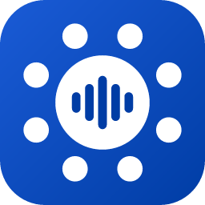
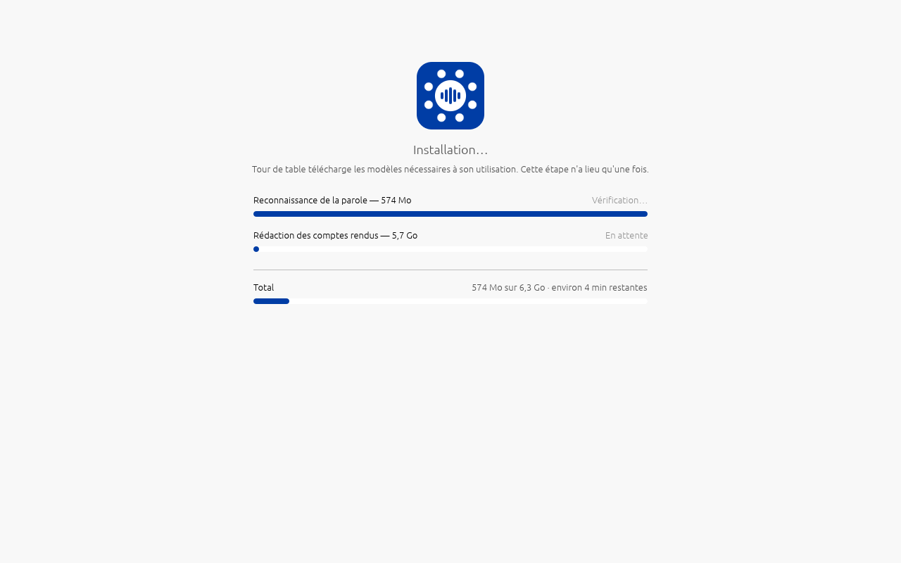
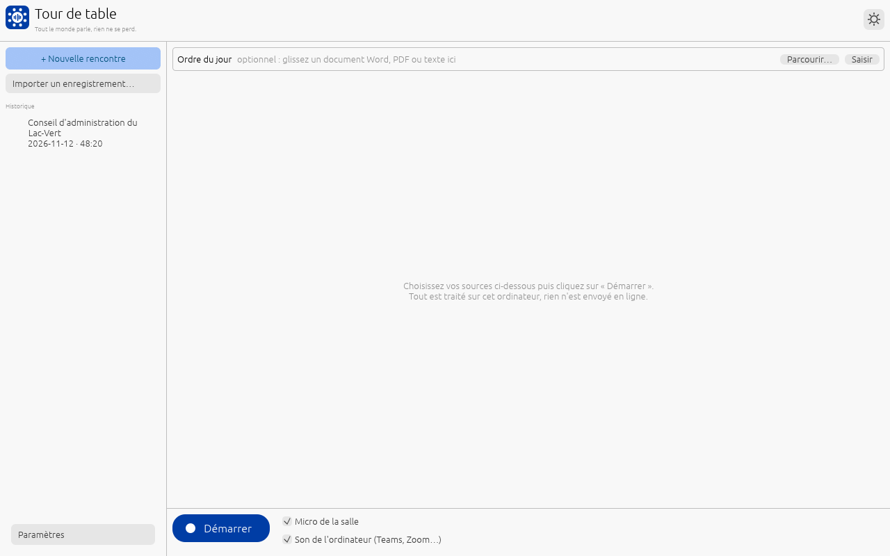
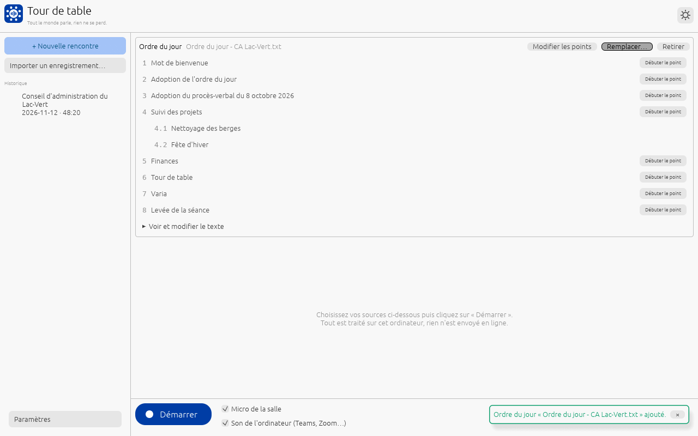
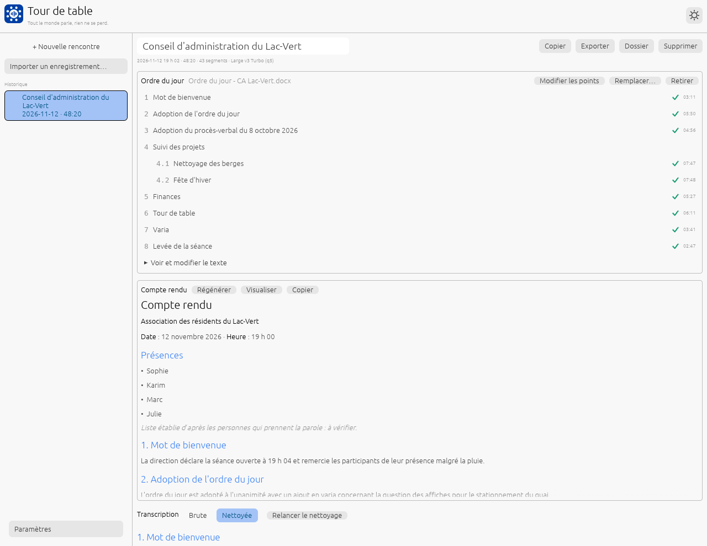
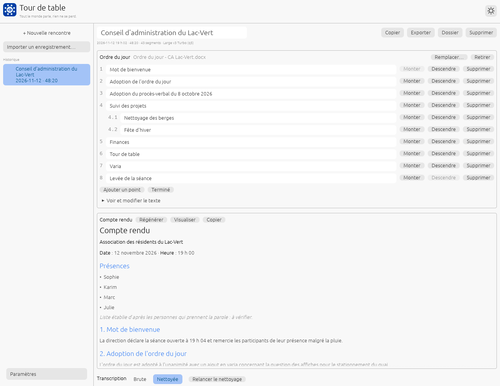
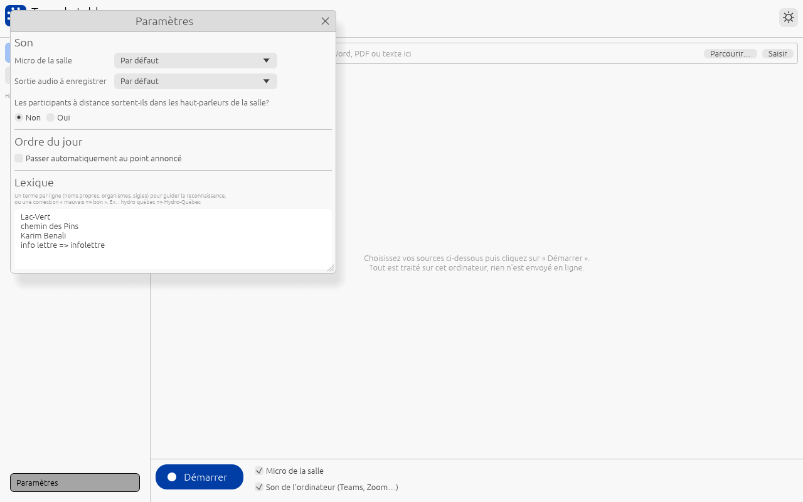

Guide d'utilisation
Version 0.1.4 · mis à jour le 4 novembre 2026
Tour de table enregistre vos rencontres de travail, les transcrit en français québécois et rédige un brouillon de compte rendu qui suit votre ordre du jour. Tout se fait sur votre ordinateur : rien n'est envoyé en ligne.
Pour une version papier ou PDF : menu Imprimer de votre navigateur (Ctrl + P, ou Cmd + P sur Mac), puis « Enregistrer en PDF ».
1. Installation et premier démarrage
Ce qu'il vous faut
- Windows 10 ou 11, macOS 14.6 ou plus récent (Mac à puce Apple), ou Linux.
- 16 Go de mémoire vive au minimum. Sous ce seuil, Tour de table l'indique au démarrage.
- Environ 7 Go d'espace disque pour les deux modèles, plus l'audio de vos rencontres.
- Une connexion Internet, une seule fois, au premier démarrage.
Installer l'application
- Windows : installez Tour de table depuis le Microsoft Store, ou décompressez le fichier
tourdetable-windows-x64.zipde la page des versions et lancezTourDeTable.exe. - macOS : décompressez
tourdetable-macos-arm64.zipet glissez l'application dans le dossier Applications. - Linux : décompressez
tourdetable-linux-x64.tar.gzet lanceztourdetable.
Le premier démarrage
Au premier lancement, Tour de table télécharge tout seul les deux modèles dont il a besoin, sans rien vous demander : la reconnaissance de la parole (574 Mo), puis la rédaction des comptes rendus (5,7 Go). L'écran « Installation… » montre l'avancement et le temps restant.

Vous pouvez fermer l'application pendant l'installation : elle reprend là où elle s'était arrêtée au démarrage suivant.
En organisation, si les postes n'ont pas accès à Internet, les modèles peuvent être copiés d'avance : voir la section « Déploiement en organisation » du README.
2. L'écran d'accueil

- + Nouvelle rencontre : revient à cet écran pour préparer la rencontre suivante.
- Importer un enregistrement… : transcrit un fichier audio ou vidéo existant (voir section 5).
- Historique : toutes vos rencontres, la plus récente en haut, avec leur date et leur durée. Cliquez sur une rencontre pour ouvrir sa fiche.
- Paramètres, en bas à gauche : micro, sortie audio et lexique (voir section 9).
- Le bouton rond en haut à droite change l'apparence : celle du système, claire ou foncée.
- La zone Ordre du jour et le bouton Démarrer servent à la rencontre qui commence.
3. Préparer l'ordre du jour
L'ordre du jour est facultatif, mais il change beaucoup le résultat : la transcription est découpée par point, la reconnaissance des noms propres s'améliore, et le compte rendu suit la même numérotation.
Ajouter l'ordre du jour
- Glissez le document dans la fenêtre, ou cliquez sur Parcourir….
- Formats acceptés : Word (
.docx, ou.docde Word 97-2003), PDF, texte (.txt,.md). Un PDF numérisé en image n'a pas de texte lisible : utilisez plutôt le document Word d'origine. - Saisir permet aussi de l'écrire à la main.

Tour de table reconnaît les numérotations courantes (« 1. », « 1) », « Point 1 : », « I. », « a) », les puces et les sous-points comme « 4.1 »). Vérifiez la liste : si un point manque ou est mal découpé, cliquez sur Modifier les points (voir section 7). Remplacer… change de document, et Retirer enlève l'ordre du jour.
Vous avez oublié l'ordre du jour? Vous pouvez aussi le déposer après la rencontre, dans sa fiche.
4. Enregistrer une rencontre
Choisir les sources
Sous le bouton Démarrer, deux cases indiquent ce qui est capté :
- Micro de la salle : les personnes présentes autour de l'ordinateur.
- Son de l'ordinateur (Teams, Zoom…) : les participants à distance, tels que vous les entendez. Aucun pilote à installer. Sur Mac, l'autorisation est demandée au premier usage.
Pour une rencontre hybride, gardez les deux cases cochées. Si les participants à distance sortent dans les haut-parleurs de la salle, répondez « Oui » à la question des Paramètres pour éviter qu'ils soient transcrits deux fois.
Pendant la rencontre
- Cliquez sur Démarrer, ou directement sur Débuter le point du premier point : l'enregistrement démarre aussitôt.
- La transcription s'affiche au fil de la rencontre. Elle est sauvegardée après chaque phrase : une panne ou une coupure de courant ne fait rien perdre.
- Quand on change de sujet, cliquez sur Débuter le point du point abordé. Quand quelqu'un annonce « on passe au point 4 », Tour de table met ce bouton en évidence. Vous pouvez revenir sur un point déjà traité avec Revenir au point.
- Pause suspend la captation (huis clos, discussion hors sujet) : rien n'est capté, ni transcrit ni conservé, jusqu'à Reprendre.
- Arrêter termine la rencontre. Elle apparaît alors dans l'historique.
Raccourcis clavier
| Action | Windows et Linux | macOS |
|---|---|---|
| Point suivant | Ctrl + → | Cmd + → |
| Point précédent | Ctrl + ← | Cmd + ← |
| Hors point (discussion en dehors de l'ordre du jour) | Ctrl + H | Cmd + H |
Après la rencontre
Dès l'arrêt, la transcription est nettoyée en quelques secondes (phrases recollées, répétitions et hésitations retirées). Si un ordre du jour est joint, le compte rendu se rédige ensuite tout seul, en arrière-plan : vous pouvez continuer à utiliser l'ordinateur. Un avis s'affiche quand il est prêt.
5. Importer un enregistrement
Vous avez déjà l'enregistrement d'une rencontre (Teams, Zoom, téléphone, enregistreuse)? Cliquez sur Importer un enregistrement…, ou glissez le fichier dans la fenêtre.
- Formats : MP4 (enregistrements Teams), M4A (Zoom, téléphones), MP3, WAV, FLAC et OGG.
- Rien à installer : même un enregistrement de plusieurs heures est lu sans difficulté. Une copie intacte du fichier est gardée.
- L'avancement s'affiche par tranche de 2 minutes. L'application reste utilisable pendant ce temps.
Le plus simple : déposez d'abord l'ordre du jour, puis importez l'enregistrement, et revenez plus tard. Tour de table transcrit, range l'audio par point d'après les annonces reconnues (« on passe au point 3… ») et rédige le compte rendu.
Si le rangement par point n'est pas juste, le bouton Découper par points de la fiche ouvre un écran de vérification. Vous y voyez l'heure de début de chaque point et la phrase qui l'a déclenché. Vous pouvez écouter 10 secondes autour de chaque frontière, la déplacer, en ajouter ou en retirer, puis valider.
6. La fiche d'une rencontre
Cliquez sur une rencontre de l'historique pour ouvrir sa fiche : ordre du jour, compte rendu et transcription.

En haut de la fiche
- Le titre se modifie directement : cliquez dessus et tapez.
- Copier : copie la transcription, à coller dans un courriel ou un document.
- Exporter : écrit la transcription en Markdown, en texte et en sous-titres (SRT), et ouvre le dossier.
- Dossier : ouvre le dossier de la rencontre (audio, transcription, compte rendu Word).
- Supprimer : place la rencontre dans la corbeille de Tour de table.
L'ordre du jour
Chaque point traité porte un crochet vert et le temps qui lui a été consacré. Pour un point, vous pouvez exporter son audio seul (tous les passages sur ce point, bout à bout), ou l'audio complet de la rencontre.
La transcription
- Nettoyée (par défaut) : phrases recollées, répétitions et hésitations retirées. C'est cette version que lit le compte rendu.
- Brute : telle que transcrite, jamais modifiée.
- Chaque phrase porte son heure et sa source : Salle ou À distance.
7. Modifier les points
Modifier les points permet de corriger la liste reconnue dans l'ordre du jour, avant, pendant ou après la rencontre.

- Cliquez dans un titre pour le renommer.
- Monter et Descendre changent l'ordre ; Supprimer retire un point.
- Ajouter un point en ajoute un à la fin.
- Voir et modifier le texte affiche le texte complet de l'ordre du jour. Après une correction, Relire le texte reconnaît à nouveau les points.
8. Le compte rendu
Le compte rendu suit la forme habituelle des comptes rendus d'organisme : en-tête (titre, date et heure), présences, puis chaque point de l'ordre du jour avec la même numérotation, et la levée de la séance.
- Chaque point est rédigé au présent et à la troisième personne : une phrase d'introduction, les éléments principaux en puces, puis ce qui est convenu (« Il est convenu que… »).
- Un point qui a des sous-points devient un intertitre ; une adoption tient en une phrase ; un point non abordé est indiqué comme tel.
- Sans ordre du jour, Tour de table produit un résumé structuré.
- Durée de rédaction : de 0,8 à 1,2 fois la durée de la rencontre, selon l'ordinateur.
Les boutons du compte rendu
- Rédiger le compte rendu : lance la rédaction, si elle ne s'est pas faite toute seule.
- Régénérer : rédige tout à nouveau, par exemple après une correction de l'ordre du jour.
- Visualiser : ouvre le compte rendu dans Word (
compte-rendu.docx), prêt à relire et à diffuser. - Copier : copie le compte rendu.
C'est un brouillon à relire. Le modèle a pour consigne de ne rien inventer, mais il peut se tromper :
• Tout montant ou nombre absent de la transcription et de l'ordre du jour est signalé dans un encadré « À vérifier », regroupé par point.
• Tour de table ne reconnaît pas les voix : la liste des présences reprend les personnes qui prennent la parole, et porte la mention « à vérifier ». Relisez aussi les « Mme » et « M. », et qui a dit quoi.
9. Les paramètres

- Micro de la salle et Sortie audio à enregistrer : « Par défaut » convient le plus souvent.
- Les participants à distance sortent-ils dans les haut-parleurs de la salle? « Non » (casque, ou haut-parleur de conférence) : la transcription distingue « Salle » et « À distance ». « Oui » : le micro capte aussi les participants à distance, et les deux sources sont réunies pour éviter les doublons.
- Passer automatiquement au point annoncé : quand on entend « on passe au point 4 », la rencontre passe seule à ce point (annulable pendant 10 secondes). Décoché, le bouton du point annoncé est seulement mis en évidence.
- Lexique : noms propres, organismes et sigles, un par ligne, pour guider la reconnaissance. On peut aussi
y mettre une correction, sous la forme
mauvais => bon, par exemplehydro québec => Hydro-Québec.
10. Où sont mes fichiers?
Chaque rencontre a son propre dossier dans Musique › Tour de table, nommé d'après sa date et son titre
(par exemple 2026-11-12-rencontre-ca-lac-vert). Vous y trouvez :
| Fichier | Contenu |
|---|---|
compte-rendu.docx | Le compte rendu, en Word |
compte-rendu.md | Le compte rendu, en texte Markdown |
transcription.md, .txt, .srt | La transcription brute, en Markdown, en texte et en sous-titres |
transcription-nettoyee.md | La transcription nettoyée |
| Un sous-dossier par point | La transcription de ce point |
Fichier .wav | L'audio de la rencontre |
| Système | Rencontres | Modèles, paramètres, journal, corbeille |
|---|---|---|
| Windows | Musique\Tour de table\ | %APPDATA%\TourDeTable\TourDeTable\data\ |
| macOS | ~/Music/Tour de table/ | ~/Library/Application Support/ca.TourDeTable.TourDeTable/ |
| Linux | ~/Musique/Tour de table/ | ~/.local/share/tourdetable/ |
Confidentialité. L'audio, les transcriptions, les ordres du jour et les comptes rendus restent sur votre ordinateur. La seule connexion est le téléchargement des modèles au premier démarrage. Détails dans la politique de confidentialité.
11. Dépannage
- Rien n'est transcrit : vérifiez que la bonne case est cochée sous Démarrer, puis le micro et la sortie audio dans les Paramètres.
- Les participants à distance apparaissent deux fois : répondez « Oui » à la question sur les haut-parleurs de la salle.
- Un nom revient toujours mal écrit : ajoutez-le au lexique, ou ajoutez une correction
mauvais => bon. - Le compte rendu mélange les points : vérifiez les points de l'ordre du jour, puis le découpage avec Découper par points, et cliquez sur Régénérer.
- « Tour de table demande au moins 16 Go » s'affiche au démarrage : l'ordinateur a moins de 16 Go de mémoire vive. La transcription fonctionne, mais la rédaction du compte rendu risque d'être très lente ou d'échouer. Utilisez un poste de 16 Go ou plus pour la rédaction.
- Demande d'aide : joignez le fichier
journal.txtdu dossier de l'application (voir le tableau ci-dessus), et écrivez à tourdetable.app@outlook.com.